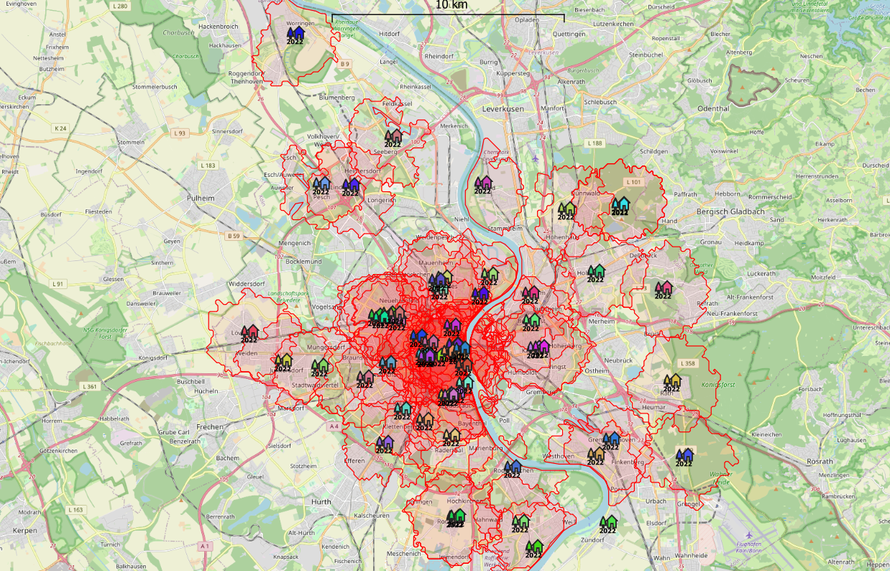

Mithilfe der nachfolgenden Tag-für-Tag-Übersicht lässt sich genauestens bestimmen, an welchen Tagen im Jahre 2018 bzw. im Jahre 2022 welche Weihnachstmärkte in welcher Frequenz geöffnet wurden.
Ein Blick auf die blanken Zahlen lässt erahnen, was der allgemeine Verdacht bereits nahelegte: Mit 65 geöffneten Weihnachtsmärkten liegt der Winter 2018 vor dem Jahr 2022 und seinen 62 geöffneten Weihnachtsmärkten. Darüber hinaus muss davon ausgegangen werden, dass fast sämtliche Weihnachtsmärkte, die 2022 stattfanden, zum Zeitpunkt der Recherche online beworben und einsehbar gemacht wurden, während viele Weihnachtsmärkte aus 2018 nicht mehr online abrufbar sein dürften und somit die tatsächlichen Zahlen noch deutlicher auseinandergehen könnten.
Die durch das Video dokumentierte Öffnungszeitenanalyse stützt diese Erkenntnisse: Neben mehr Märkten und entsprechend mehr Öffnunsgzeiten waren die Kölner Weihnachtsmärkte 2018 deutlich weiter über die Stadt verteilt. Wie später noch mit separat erzeugten Heatmaps deutlich werden soll, existierten 2018 noch etwa drei bis vier größere Ballungsgebiete über ganz Köln verteilt, während sich die Weihnachtsmarktverteilung im Jahr 2022 auf ein zentrales Ballungsgebiet, rund um Dom und Altstadt, beschränkte.
Während die Covid-Regelungen im Winter 2022 bereits weitestgehend aufgehoben waren, sorgte die Corona-Schutzverordnung in den beiden Vorgängerjahren noch für weitgehende Schließungen der Kölner Weihnachtsmärkte.
2020: L
ockdown, Corona-Schutzverordnung, Verbot von Großveranstaltungen (Quelle)
Kölner Weihnachtsmärkte bleiben ausnahmslos geschlossen
2021: 2G-Kontrollen, eingezäunte Weihnachtsmärkte, verkürzte Öffnungszeiten (Quelle)
Einige Weihnachtsmärkte werden geöffnet, viele bleiben wegen zu hoher
Auflagen geschlossen (Quelle)
2022: Aufhebung aller Maßnahmen, aber Verbot von Bühnenprogramm nach 22 Uhr (Quelle)
Die Stadt Köln gilt deutschlandweit als eine der wichtigsten und bekanntesten Anlaufstellen für Weihnachtsmarktenthusiasten. Nicht selten treten Freunde und Kollegen eine Reise zur Stadt am Dom an, um ausgehend vom zentralen Bahnverkehrspunkt, dem Kölner Hauptbahnhof, die zahlreichen Weihnachtsmärkte rund um Dom und Innenstadt anzusteuern. Dementsprechend bildet der Hauptbahnhof für sämtliche nachfolgenden geografischen Analysen den Fixpunkt, von dem aus ein nicht unwesentlicher Teil der Weihnachtsamarktbesucher seine Tour beginnen wird.
Für die Planung des Weihnachtsmarktbesuchs empfiehlt es sich, zunächst einen groben Überblick über etwaige Wegezeiten zu verschaffen. Welche Weihnachtsmärkte sind zu Fuß zu erreichen? Sollte auf die Kölner Bus- und Bahnanbindung zurückgegriffen werden oder reicht die Zeit für einen winterlichen Spaziergang?
Diese Weihnachtsmärkte sind innerhalb eines 60-minütigen Fußwegs vom
Kölner Hauptbahnhof (nicht) zu erreichen
Diese Weihnachtsmärkte sind innerhalb einer 30-minütigen Fahrt mit den öffentlichen Verkehrsmitteln
vom Kölner Hauptbahnhof (nicht) zu erreichen
Haben die vorausdenken Besucher sich erst einmal einen Überblick über die potentiell erreichbaren Ziele verschafft, bietet sich nachfolgend eine Detailansicht an, in der für jeden der etwa 60 Weihnachtsmärkte der schnellstmögliche Weg inklusive Lauf- bzw. Fahrtzeit angezeigt wird.
Innerhalb der angegeben Zeit sind diese Weihnachtsmärkte fußläufig erreichbar.
Innerhalb der angegebenen Zeit sind diese Weihnachtsmärkte mit Bus und Bahn erreichbar
Für die Reiseplanung tendenziell unerheblich, aber dennoch einen Blick wert: Die Flächenübersicht zeigt für jeden Weihnachtsmarkt, wie weit Besucher innerhalb einer festgelegten Zeit zu Fuß, mit Auto, Fahrrad oder Bus und Bahn vom Ausgangspunkt des Weihnachtsmarktes kommen würden. Diese Ansicht ähnelt einer Heatmap und ermöglicht einen grundlegenden Überblick, inwieweit andere Weihnachtsmärkte erreichbar sind.
Die roten Flächen visualisieren, wie weit Weihnachtsmarktbesucher zu Fuß
innerhalb von 30 Minuten in jede Richtung gelangen würden.

Die roten Flächen visualisieren, wie weit Weihnachtsmarktbesucher mit Bus und Bahn
innerhalb von 30 Minuten in jede Richtung gelangen würden.
Für die Reiseplanung genauso unerheblich, geografisch aber nicht minder interessant, sind die Heatmaps der Kölner Weihnachtsmärkte 2018 und 2022 - besonders im Vergleich: Während sich im Jahre 2018 - etwa 2 Jahre vor Pandemiebeginn - noch zahlreiche Weihnachtsmärkte rund um Dom und Schildergasse als Zentrum der Stadt ansiedelten, nahm deren Zahl im Jahre 2022 deutlich ab: Bedeutend weniger Weihnachtsmärkte, jedoch in einem gleich bleibenden Radius. Die in dunklerem Rot gefärbten Flecken belegen, wie sich das Jahr 2018 mit gleich mehreren größeren Hotspots am Dom, am Aachener Weiher und in Ehrenfeld deutlich von 2022 abhebt, in dem lediglich der Bereich um den Dom noch mehrere Weihnachtsmärkte nah beieinander aufweisen kann.
Eine Heatmap der Kölner Weihnachtsmärkte 2018.
Eine Heatmap der Kölner Weihnachtsmärkte 2022.
Geografische und zeitliche Analysen von Karten zur Verzeichnung von Weihnachtsmärkten haben theoretischen wie praktischen Nutzen. Sie unterstützen die Reiseplanung und vermitteln Zusatzinfos, die sich vor Reiseantritt als durchaus nützlich erweisen.
Zeitgleich lassen sie Rückschlüsse auf gesellschaftlich relevante Entwicklungen ziehen, die jedoch stets unter Vorbehalt betrachtet und nicht ausschließlich auf Grundlage von Kartenvergleichen vorgenommen werden sollten. So scheint sich die Erkenntnis, dass die Covid-Pandemie zu einem Rückgang der Weihnachtsmarktöffnungen geführt hat,
zunächst aufzudrängen und für die Jahre 2020 und 2021 durchaus zuzutreffen. Auch das Jahr 2022 scheint hiervon noch am Rande betroffen, doch nur wenige Weihnachtsmärkte, die 2018 stattfanden, für 2022 aber abgesagt wurden, gaben in diesem Jahr noch explizit die Pandemie als Grund an. Eine Ausnahme bildet der "Weihnachtsmarkt auf dem Marktplatz" in Sürth, der angab, aufgrund von "gesundheitlichen und personellen Gründen" geschlossen zu bleiben (siehe Stellungnahme). Anders verhielt es sich im Jahr 2020, in dem die meisten Weihnachtsmärkte offiziell durch die Stadt Köln mit Berufung auf die Corona-Schutzverordnung abgesagt wurden sowie 2021, als viele Weihnachtsmärkte wegen zu hoher Auflagen nicht öffneten.
Am Ende ist ein realer Trend - und damit eine mittelfristig erkennbare Korrelation zwischen Covid und gesunkener Weihnachtsmarktöffnungszahl - nur mit einem Blick auf die Karten nicht eindeutig belegbar, aus den erhobenen Daten jedoch bis zu einem gewissen Grad ableitbar.
Eine detaillierte Betrachtung der nächsten Jahre ist für einen belastbaren Erkenntnisgewinn unumgänglich.
created with
Website Builder Software .